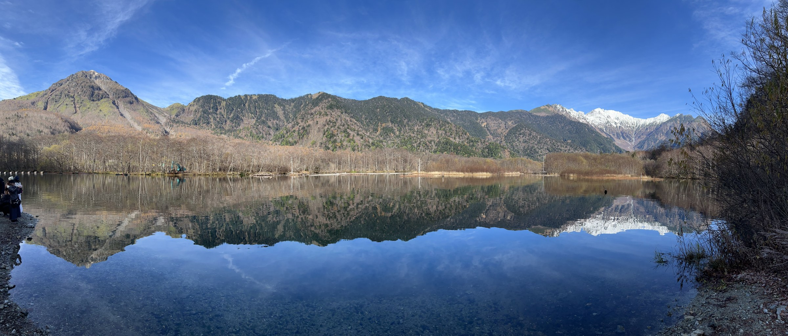

地方生活與山林的往來
江戶時代已有山林利用活動，後來也曾設牧場。這裡的歷史先有在地的人，再有外來登山者的記述。
松本市・上高地保存管理計畫 ↗
11 月的上高地，樹梢漸漸空了，山上卻多了一層白。這份手記將手機與相機的影像放在一起：看大正池的水鏡，走過林間與濕原，再沿梓川來到河童橋。照片裡的光，是那一天真正留下的光。
從池面的倒影出發，跟著腳步進入森林，最後在河童橋前停留。影片結合現場動態影像與照片，保留現場聲，配上輕柔鋼琴。繁體中文字幕置於下方獨立黑帶。
山的輪廓落進水裡，秋末的林帶將兩個世界接在一起。手機留下寬闊全景，相機收進更細的山體紋理。
藍天、山稜與水面，將進入上高地的第一眼展成一幅橫景。
相機留下清晰的山體紋理，池面則把秋末的色彩再畫一次。
落葉後的林帶沿著池畔展開，細細的波紋讓倒影有了呼吸。
近岸還在山影裡，遠方的稜線已被陽光照亮。
雪色山峰與褐色林帶相接，視線從水面一路走向天空。
手機全景把寬闊的池面與山群一起留下；放大可慢慢看每一道山稜。
清澈近水、深色倒影與遠山，形成三層不同的觀看距離。
從開闊池面轉入步道，觀看的尺度也小了：枯木、枝條、林下植被與一條細細水道，都值得停留。
離開開闊水面，樹幹與枝條開始把風景切成細小片段。
葉子落下後，林間的光線與遠山一起顯露出來。
直立的枯幹與水底的石頭，讓池畔的時間像是慢了下來。
沿途水域呈現淡淡青綠；寬幅全景保留水面與林帶的完整關係。
細小水道在草叢與樹根間轉彎，藍天倒映在狹窄水面。
上層枝葉已稀疏，林下的綠色植被仍接住陽光。
草色已由綠轉成金褐，森林後方的山稜覆上白雪。秋與冬，在同一個畫面裡相遇。
穿過樹林的空隙，白色山稜突然出現在正前方。
田代濕原一帶，秋末草色與深綠林帶在山腳下鋪開。
相機視角留下寬闊草澤，也保留遠方山脊與前景的距離。
雪覆山坡的細節從藍天下浮出，讓人忍不住停下腳步。
沒有急著拉近鏡頭，把草地、森林與遠山放在同一幅畫裡。
河床的石礫、水面上的光，與白色砂礫灘一起引路。走得越慢，越能看見河流顏色的變化。
小水道的暖色水底與周圍的綠，成為沿途一個細小驚喜。
水流沿著林地低處前行，樹影在水中交錯。
河床石礫清楚可見，兩岸林木與山體沿著河道向遠處展開。
橋上望去，河水繞過白色砂礫灘，流向山谷深處。
寬闊河灘讓水流有了彎曲的空間，也把山群襯得更高。
近處石頭、水紋與遠處山稜同框，是步行才能慢慢看見的層次。
把鏡頭稍稍放低，梓川的顏色成了畫面的主角。
水岸弧線牽引視線，從近處河灘轉向對岸山壁。
當吊橋、旅人與兩岸建築進入畫面，山谷有了人的尺度。遠處的山壁依然安靜，流水繼續往前。
對岸建築與步行的人，讓壯闊山谷有了可以親近的比例。
梓川在兩岸林木間前行，遠方山壁與殘雪構成這一段步行的終景。
吊橋橫過梓川，旅人停在橋上，把山谷的開闊一起留在記憶裡。
長焦視角留下岩壁、殘雪與溝谷的紋理，與池面的柔和平靜呼應。
上高地並非直到一位外國旅人來到才存在。地方居民、山林利用與山岳信仰，早已與這座山谷相連。「發現」更適合理解為：它如何逐漸走進近代登山與世界旅人的視野。
江戶時代已有山林利用活動，後來也曾設牧場。這裡的歷史先有在地的人，再有外來登山者的記述。
松本市・上高地保存管理計畫 ↗來自富山的僧人播隆登上槍岳，並安置佛像。這是山岳信仰與登山史上的重要節點，不能直接當作上高地首次被人發現的年份。
英國傳教士 Walter Weston 出版《日本阿爾卑斯登山與探險》，記述山岳經驗，向海外介紹上高地與周邊山群。地方嚮導上條嘉門次等人的協助，同樣是這段登山歷史的一部分。
上高地官方・歷史與年表 ↗燒岳噴發產生的泥流堵住梓川，形成大正池。今天平靜的水鏡，背後是一段火山塑造地景的歷史；持續流入的泥沙，也讓池的形態慢慢改變。
日本氣象廳・大正池形成的記錄 ↗1927 年芥川龍之介發表《河童》，同年上高地入選「日本新八景」。1934 年納入中部山岳國立公園；1952 年指定為特別名勝與特別天然紀念物。看見這片風景，也意味著一起留下它。
上高地官方・保護與年表 ↗留在步道上，帶走自己的垃圾；與野生動物保持距離，不餵食、不追逐。讓下一位走進山谷的人，也能看見今天的美。